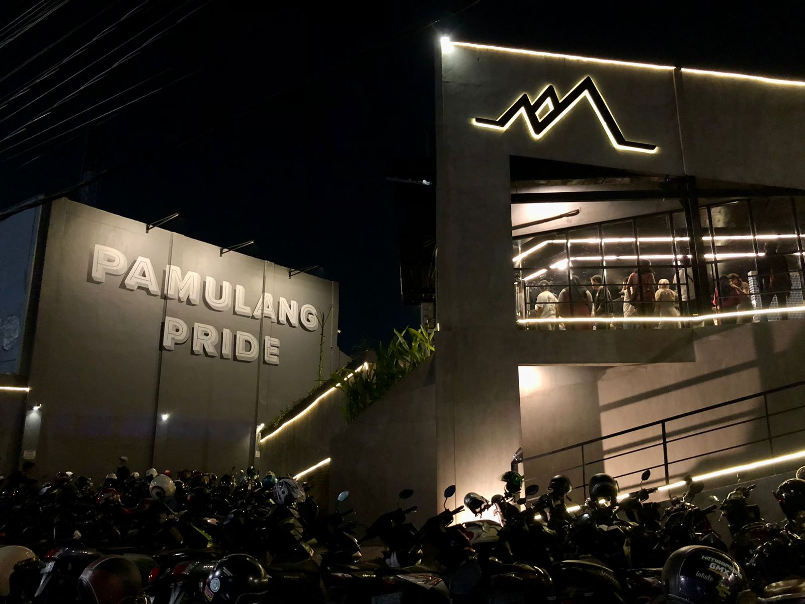
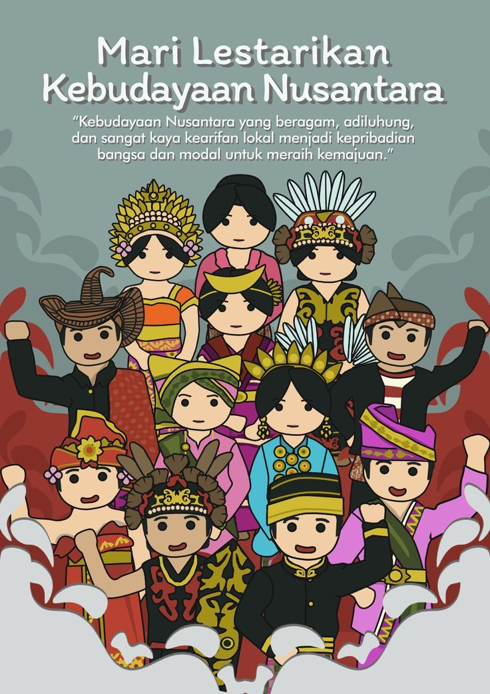

Semua Proyek & Karya
Kumpulan proyek sistem informasi, kecerdasan buatan, desain UI/UX, dan penelitian yang telah saya kembangkan selama masa perkuliahan dan magang.
 Tugas Akhir / Skripsi 2026
99.19% F1
Tugas Akhir / Skripsi 2026
99.19% F1
AnxietyCheck: Deteksi Dini Gangguan Kecemasan Gen Z (SVM)
Aplikasi web klasifikasi tingkat kecemasan (Minimal, Ringan, Sedang, Berat) berdasarkan instrumen GAD-7 menggunakan algoritma Support Vector Machine (Linear Kernel C=1) dengan akurasi pengujian 100%. Dilengkapi tes interaktif, riwayat, dashboard analitik, dan validasi psikolog klinis.

Kerja Praktek 2025 Terbit di JurnalSistem Informasi Inventaris & Stok Opname Gudang
Pengembangan sistem pendataan inventaris terkomputerisasi menggantikan pencatatan buku fisik pada Kopiluvium. Dilengkapi hak akses 3 peran (Admin, Staf, Karyawan), pencatatan barang masuk/keluar, audit stok opname fisik vs sistem, serta rekapitulasi laporan otomatis.
Perancangan UI Aplikasi Web Apotek & Farmasi
Perancangan antarmuka pengguna web apotek modern untuk katalog produk, resep dokter, dan pengelolaan stok obat dengan navigasi ringkas serta alur checkout yang mudah dipahami oleh pengguna umum.

Juara Harapan 1 NasionalKarya Desain Poster: Mari Lestarikan Kebudayaan Nusantara
Karya seni digital kampanye pelestarian kekayaan budaya Indonesia yang meraih Juara Harapan 1 pada Festival Seni dan Pendidikan Ilmiah (FSPI) Tingkat Nasional yang diselenggarakan oleh Universitas Negeri Yogyakarta.
// Regular Expression Parser
^[+-]?\d+(\.\d+)?[eE][+-]?\d+$
Input: 6.022e23 -> VALID (Accepted)
Web Validasi Format Notasi Ilmiah (Automata)
Aplikasi web interaktif untuk memverifikasi dan memvalidasi keabsahan format notasi ilmiah bilangan real menggunakan pendekatan Finite State Automata (FSA) dan parsing regex secara real-time.
Sistem Informasi Pendaftaran Siswa (PPDB / SPMB)
Portal pendaftaran siswa baru online dengan alur pendaftaran mandiri, upload dan validasi dokumen persyaratan, seleksi berkas oleh panitia sekolah, dan pengumuman hasil seleksi secara otomatis.
Sistem Informasi Faktur Penjualan (Sertifikasi BNSP)
Aplikasi pengelolaan transaksi penjualan berbasis Object-Oriented Programming (OOP). Mengimplementasikan kalkulasi otomatis PPN/DP, cetak invoice, proteksi prepared statements, dan transaksi database ACID sesuai standar kompetensi kerja nasional.
Aplikasi Manajemen & Presensi Karyawan Android Native
Aplikasi mobile Android native untuk pencatatan presensi kehadiran karyawan secara presisi. Dilengkapi penandaan titik koordinat GPS Google Maps, masukan perintah suara (voice speech recognition), dan penyimpanan database offline SQLite.
Aplikasi Antrian Apotik Desktop GUI
Aplikasi desktop antrian loket resep obat berbasis First-In-First-Out (FIFO). Dilengkapi fitur pemanggilan otomatis nomor antrian loket, manajemen antrian per loket, dan koneksi database JDBC MySQL terintegrasi.
Sistem Penggajian Java Web & Multimedia Android
Pengembangan aplikasi web penggajian karyawan berbasis Java EE (JSP & Servlet) dengan cetak slip gaji otomatis PDF engine JasperReports, serta modul mobile multimedia kamera dan TabLayout interaktif pada Android SDK.
Tidak ada proyek yang sesuai dengan pencarian.
Coba gunakan kata kunci lain seperti "Python", "PHP", "Figma", atau "SVM".